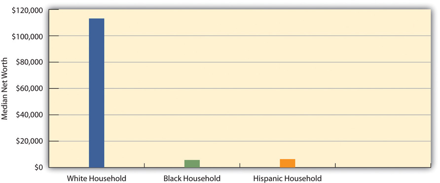

Racial and ethnic inequality manifests itself in all walks of life. The individual and institutional discrimination just discussed is one manifestation of this inequality. We can also see stark evidence of racial and ethnic inequality in various government statistics. Sometimes statistics lie, and sometimes they provide all too true a picture; statistics on racial and ethnic inequality fall into the latter category. Table 3.2 "Selected Indicators of Racial and Ethnic Inequality in the United States" presents data on racial and ethnic differences in income, education, and health.
Table 3.2 Selected Indicators of Racial and Ethnic Inequality in the United States
| White | African American | Latino | Asian | Native American | |
|---|---|---|---|---|---|
| Median family income, 2010 ($) | 68,818 | 39,900 | 41,102 | 76,736 | 39,664 |
| Persons who are college educated, 2010 (%) | 30.3 | 19.8 | 13.9 | 52.4 | 14.9 (2008) |
| Persons in poverty, 2010 (%) | 9.9 (non-Latino) | 27.4 | 26.6 | 12.1 | 28.4 |
| Infant mortality (number of infant deaths per 1,000 births), 2006 | 5.6 | 12.9 | 5.4 | 4.6 | 8.3 |
Sources: Data from US Census Bureau. (2012). Statistical abstract of the United States: 2012. Washington, DC: US Government Printing Office. Retrieved from http://www.census.gov/compendia/statab; US Census Bureau. (2012). American FactFinder. Retrieved from http://factfinder2.census.gov/faces/nav/jsf/pages/index.xhtml; MacDorman, M., & Mathews, T. J. (2011). Infant Deaths—United States, 2000–2007. Morbidity and Mortality Weekly Report, 60(1), 49–51.
The picture presented by Table 3.2 "Selected Indicators of Racial and Ethnic Inequality in the United States" is clear: US racial and ethnic groups differ dramatically in their life chances. Compared to whites, for example, African Americans, Latinos, and Native Americans have much lower family incomes and much higher rates of poverty; they are also much less likely to have college degrees. In addition, African Americans and Native Americans have much higher infant mortality rates than whites: Black infants, for example, are more than twice as likely as white infants to die. Later chapters in this book will continue to highlight various dimensions of racial and ethnic inequality.
Although Table 3.2 "Selected Indicators of Racial and Ethnic Inequality in the United States" shows that African Americans, Latinos, and Native Americans fare much worse than whites, it presents a more complex pattern for Asian Americans. Compared to whites, Asian Americans have higher family incomes and are more likely to hold college degrees, but they also have a higher poverty rate. Thus many Asian Americans do relatively well, while others fare relatively worse, as just noted. Although Asian Americans are often viewed as a “model minority,” meaning that they have achieved economic success despite not being white, some Asians have been less able than others to climb the economic ladder. Moreover, stereotypes of Asian Americans and discrimination against them remain serious problems (Chou & Feagin, 2008).Chou, R. S., & Feagin, J. R. (2008). The myth of the model minority: Asian Americans facing racism. Boulder, CO: Paradigm. Even the overall success rate of Asian Americans obscures the fact that their occupations and incomes are often lower than would be expected from their educational attainment. They thus have to work harder for their success than whites do (Hurh & Kim, 1999).Hurh, W. M., & Kim, K. C. (1999). The “success” image of Asian Americans: Its validity, and its practical and theoretical implications. In C. G. Ellison & W. A. Martin (Eds.), Race and ethnic relations in the United States (pp. 115–122). Los Angeles, CA: Roxbury.
At the beginning of this chapter, we noted that racial and ethnic inequality has existed since the beginning of the United States. We also noted that social scientists have warned that certain conditions have actually worsened for people of color since the 1960s (Hacker, 2003; Massey & Sampson, 2009).Hacker, A. (2003). Two nations: Black and white, separate, hostile, unequal (Rev. ed.). New York, NY: Scribner; Massey, D. S., & Sampson, R. J. (2009). Moynihan redux: Legacies and lessons. The ANNALS of the American Academy of Political and Social Science, 621, 6–27.
Recent evidence of this worsening appeared in a report by the Pew Research Center (2011).Pew Research Center. (2011). Twenty-to-one: Wealth gaps rise to record highs between whites, blacks and Hispanics. Washington, DC: Author. The report focused on racial disparities in wealth, which includes a family’s total assets (income, savings and investments, home equity, etc.) and debts (mortgage, credit cards, etc.). The report found that the wealth gap between white households on the one hand and African American and Latino households on the other hand was much wider than just a few years earlier, thanks to the faltering US economy since 2008 that affected blacks more severely than whites.
According to the report, whites’ median wealth was ten times greater than blacks’ median wealth in 2007, a discouraging disparity for anyone who believes in racial equality. By 2009, however, whites’ median wealth had jumped to twenty times greater than blacks’ median wealth and eighteen times greater than Latinos’ median wealth. White households had a median net worth of about $113,000, while black and Latino households had a median net worth of only $5,700 and $6,300, respectively (see Figure 3.5 "The Racial/Ethnic Wealth Gap (Median Net Worth of Households in 2009)"). This racial and ethnic difference is the largest since the government began tracking wealth more than a quarter-century ago.
Figure 3.5 The Racial/Ethnic Wealth Gap (Median Net Worth of Households in 2009)
Source: Pew Research Center, 2011.
A large racial/ethnic gap also existed in the percentage of families with negative net worth—that is, those whose debts exceed their assets. One-third of black and Latino households had negative net worth, compared to only 15 percent of white households. Black and Latino households were thus more than twice as likely as white households to be in debt.
An increasing amount of evidence suggests that being black in a society filled with racial prejudice, discrimination, and inequality takes what has been called a “hidden toll” on the lives of African Americans (Blitstein, 2009).Blitstein, R. (2009). Weathering the storm. Miller-McCune, 2(July–August), 48–57. As we shall see in later chapters, African Americans on the average have worse health than whites and die at younger ages. In fact, every year there are an additional 100,000 African American deaths than would be expected if they lived as long as whites do. Although many reasons probably explain all these disparities, scholars are increasingly concluding that the stress of being black is a major factor (Geronimus et al., 2010).Geronimus, A. T., Hicken, M., Pearson, J., Seashols, S., Brown, K., & Cruz., T. D. (2010). Do US black women experience stress-related accelerated biological aging? Human Nature: An Interdisciplinary Biosocial Perspective, 21, 19–38.
In this way of thinking, African Americans are much more likely than whites to be poor, to live in high-crime neighborhoods, and to live in crowded conditions, among many other problems. As this chapter discussed earlier, they are also more likely, whether or not they are poor, to experience racial slights, refusals to be interviewed for jobs, and other forms of discrimination in their everyday lives. All these problems mean that African Americans from their earliest ages grow up with a great deal of stress, far more than what most whites experience. This stress in turn has certain neural and physiological effects, including hypertension (high blood pressure), that impair African Americans’ short-term and long-term health and that ultimately shorten their lives. These effects accumulate over time: black and white hypertension rates are equal for people in their twenties, but the black rate becomes much higher by the time people reach their forties and fifties. As a recent news article on evidence of this “hidden toll” summarized this process, “The long-term stress of living in a white-dominated society ‘weathers’ blacks, making them age faster than their white counterparts” (Blitstein, 2009, p. 48).Blitstein, R. (2009). Weathering the storm. Miller-McCune, 2(July–August), 48–57.
Although there is less research on other people of color, many Latinos and Native Americans also experience the various sources of stress that African Americans experience. To the extent this is true, racial and ethnic inequality also takes a hidden toll on members of these two groups. They, too, experience racial slights, live under disadvantaged conditions, and face other problems that result in high levels of stress and shorten their life spans.
Before we leave this section, it is important to discuss the advantages that US whites enjoy in their daily lives simply because they are white. Social scientists term these advantages white privilegeThe advantages that US whites enjoy in their daily lives simply because they are white, whether or not they are aware of these advantages. and say that whites benefit from being white whether or not they are aware of their advantages (McIntosh, 2007).McIntosh, P. (2007). White privilege and male privilege: A personal account of coming to see correspondence through work in women’s studies. In M. L. Andersen & P. H. Collins (Eds.), Race, class, and gender: An anthology (6th ed.). Belmont, CA: Wadsworth.
This chapter’s discussion of the problems facing people of color points to some of these advantages. For example, whites can usually drive a car at night or walk down a street without having to fear that a police officer will stop them simply because they are white. Recalling the Trayvon Martin tragedy, they can also walk down a street without having to fear they will be confronted and possibly killed by a neighborhood watch volunteer. In addition, whites can count on being able to move into any neighborhood they desire to as long as they can afford the rent or mortgage. They generally do not have to fear being passed up for promotion simply because of their race. White students can live in college dorms without having to worry that racial slurs will be directed their way. White people in general do not have to worry about being the victims of hate crimes based on their race. They can be seated in a restaurant without having to worry that they will be served more slowly or not at all because of their skin color. If they are in a hotel, they do not have to think that someone will mistake them for a bellhop, parking valet, or maid. If they are trying to hail a taxi, they do not have to worry about the taxi driver ignoring them because the driver fears he or she will be robbed.
Social scientist Robert W. Terry (1981, p. 120)Terry, R. W. (1981). The negative impact on white values. In B. P. Bowser & R. G. Hunt (Eds.), Impacts of racism on white Americans (pp. 119–151). Beverly Hills, CA: Sage Publications. once summarized white privilege as follows: “To be white in America is not to have to think about it. Except for hard-core racial supremacists, the meaning of being white is having the choice of attending to or ignoring one’s own whiteness” (emphasis in original). For people of color in the United States, it is not an exaggeration to say that race and ethnicity is a daily fact of their existence. Yet whites do not generally have to think about being white. As all of us go about our daily lives, this basic difference is one of the most important manifestations of racial and ethnic inequality in the United States.
Perhaps because whites do not have to think about being white, many studies find they tend to underestimate the degree of racial inequality in the United States by assuming that African Americans and Latinos are much better off than they really are. As one report summarized these studies’ overall conclusion, “Whites tend to have a relatively rosy impression of what it means to be a black person in America. Whites are more than twice as likely as blacks to believe that the position of African Americans has improved a great deal” (Vedantam, 2008, p. A3).Vedantam, S. (2008, March 24). Unequal perspectives on racial equality. The Washington Post, p. A3. Because whites think African Americans and Latinos fare much better than they really do, that perception probably reduces whites’ sympathy for programs designed to reduce racial and ethnic inequality.